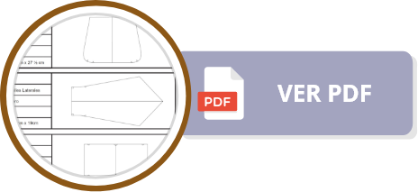
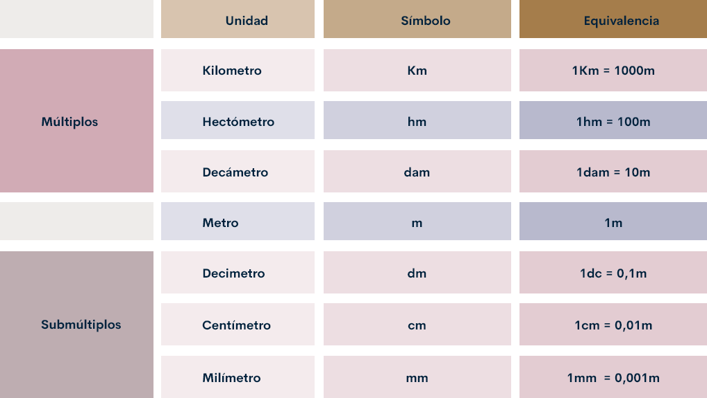
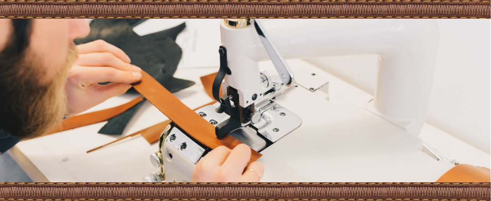

Introducción
La preparación de las piezas es el primer momento para la realización de los prototipos, bienvenido a este componente formativo en donde se hace énfasis en la importancia del proceso creativo, evolutivo y productivo en el desarrollo de los productos de marroquinería. Los procesos marroquineros se deben conocer y posteriormente toda la reglamentación, las unidades de medida, los materiales, la maquinaria y los puntos clave posteriores como los son el corte y el desbaste. Este es un componente formativo que agrupa el contenido fundamental de manera teórica y práctica que se debe conocer para iniciar el proceso de elaboración de un buen prototipo.
Dedique el tiempo necesario para este estudio y la apropiación del conocimiento de la mejor forma por su parte y no olvide que si tiene dudas las puede reflejar en los diferentes canales habilitados del Servicio Nacional de Aprendizaje
1. El proceso productivo en marroquinería.
Este es el proceso habitual que se hace por parte de los marroquineros para la producción de los productos y es muy respetado porque gracias a él se logra el estándar anhelado.

2. Fichas técnicas.
Son los recursos ideales para la estandarización de la producción y todos los productos deben tenerla ajustada, es por eso que en este contenido se presentan:
2.1 Ficha técnica de diseño
Es necesario que conozca las fichas técnicas de diseño con la que se hace el pedido general del producto, la puede descargar e imprimir.

2.2 Ficha técnica de producción
Esta ficha técnica dispone todas las partes que se deben tener en la producción de los productos de marroquinería, la puede descargar e imprimir.
2.3 Ficha técnica de consumo
Con esta ficha técnica se lleva el control del material y su consumo, la puede descargar e imprimir.

2.4 Ficha técnica de desbaste
Esta es la ficha técnica que muestra el desbaste requerido para las piezas y su unión, esta ficha técnica la puede descargar e imprimir.

2.5 Orden de producción
Todo trabajo inicia con una orden de producción, este formato es el que da orden al proceso, no se recomienda iniciar un proceso productivo sin una orden de producción; esta orden de producción está disponible para que la descargue y la imprima.

2.6 Ficha técnica de procesos de producto
Esta ficha técnica muestra el orden en que se deben elaborar las piezas, el montaje y el trabajo de los diferentes diseños y modelos para el trabajo ordenado, recuerde que esta ficha técnica la puede descargar e imprimir.
2.7 Ficha técnica de moldes
Esta es la ficha técnica para la elaboración de los moldes, esta ficha hace referencia a los diferentes moldes, sus aumentos y sus medidas, esta ficha técnica se puede imprimir y descargar.
3. Materiales e insumos utilizados en marroquinería.
En este capítulo se abordarán los conceptos relacionados con las unidades de medida más usados en este proceso. La atención se centrará en conceptos como metrología, el sistema de medición y el principal sistema de unidades.
3.1 Metrología.
La metrología es la ciencia e ingeniería de la medida, incluyendo el estudio, mantenimiento y aplicación del sistema de pesos y medidas.
Actúa tanto en los ámbitos científico, industrial y legal, como en cualquier otro demandado por la sociedad.
Su objetivo fundamental es la obtención y expresión del valor de las magnitudes, garantizando la trazabilidad de los procesos y la consecución de la exactitud requerida en cada caso; empleando para ello instrumentos métodos y medios apropiados.
3.2 Medición

La medición es la acción de medir, o sea, determinar mediante instrumentos o mediante una relación o fórmula previa un resultado dentro de los parámetros escogidos.
La medición deriva del verbo medir que a su vez viene de la palabra latina metriri que significa: “comparar una cantidad con su respectiva unidad, con el fin de averiguar cuántas veces la segunda está contenida en la primera” RAE (2020).
La medición sirve para determinar magnitudes de un objeto en relación con otro objeto que sirve de patrón, que es definido antes por un consenso. Hoy en día, estos modelos de comparación que usamos todos los días como, por ejemplo, el kilo, la temperatura y los centímetros, están unificados en lo que se conoce como el Sistema internacional de medidas (SI).
3.3 Sistema Internacional (SI)

El Sistema Internacional de Unidades, abreviado S.I., también denominado Sistema Internacional de Medidas, es el heredero del antiguo sistema métrico decimal, por lo que el S.I. también es conocido de forma genérica como sistema métrico.
Es un sistema constituido por siete unidades básicas: metro, kilogramo, segundo, kelvin, amperio, mol y candela, que definen a las correspondientes magnitudes físicas fundamentales y que han sido elegidas por convención y se nombran como lo dice Llópiz & Gómez (1998) “Existen varias reglas y especificaciones en cuanto al uso de la simbología del SI.Se recomienda el uso de letras minúsculas en los símbolos o las abreviaturas (ejemplos: m, kg, s, mol,cd )”.
3.4 Magnitud y unidades básicas
La magnitud física es una propiedad de los cuerpos y elementos que permite que sean medibles y, en algunos casos, observables. Asimismo, las magnitudes pueden ser de dos tipos: escalares y vectoriales en las que las primeras tienen la opción de indicar con un número el valor mientras que las vectoriales necesitan también un vector de representación que actúa para complementar la información numérica como por ejemplo la fuerza que tiene un valor y un sentido.
En el Sistema Internacional de Unidades, las magnitudes que se cuantifican son:

3.5 Múltiplos y submúltiplos del metro
La siguiente tabla presenta los símbolos y equivalencias de los múltiplos de la unidad de medida metro, se debe saber que los submúltiplos son los que se usan en la industria del cuero.

Conversiones submúltiplos de longitud
Equivalencias del metro.
Unidades del metro.

3.6 Conversión del sistema inglés al SI
“Desde el nacimiento de la civilización, la comparación ha sido siempre muy importante. De hecho uno de los primeros conceptos que los niños aprenden en la escuela es el concepto de la relación de orden expresada por más pequeño o más grande que e inclusive, es igual que” Ledanois & López 1996; es por esa medición y esa gestión que se hace necesario relacionar todos los conceptos de medidas trabajados hasta el momento y lograr un factor de equilibrio que permita trabajar las unidades de los dos sistemas de manera equivalente como lo muestra la siguiente tabla con la que se puede realizar las conversiones necesarias en el área del cuero y la marroquinería para el trabajo.
3.7 Unidades de medida del cuero en el comercio
Comercialmente en las talabarterías y en los diferentes centros de acopio y comercialización del cuero se presentan las siguientes medidas, usted como marroquinero debe tenerlo en cuenta porque es la parte que va a direccionar el costo del producto entre otros factores.

3.8 Instrumentos para medir utilizados en marroquinería
Estos son los instrumentos más comunes a la hora de medir en marroquinería
Calibrador, también llamado pie de rey o calibre vernier
“El pie de rey incluye dos juegos de pinzas que sirven para medir exteriores e interiores. Además, gracias a la sonda de profundidad, el calibre tipo pie de rey también se puede usar para medir el fondo de un orificio ciego, ranuras, cavidades, etcétera” Papelería-Técnica (2020).
Micrómetro, también llamado tornillo de Palmer
“Un micrómetro, también llamado Tornillo de Palmer, es un instrumento de medición cuyo funcionamiento está basado en el tornillo micrométrico y que sirve para medir las dimensiones de un objeto con alta precisión, del orden de centésimas de milímetros (0,01 mm) y de milésimas de milímetros (0,001mm)” Ingeniería Mecafenix (2018).

Micrómetro digital
“El micrómetro digital es un instrumento portátil para medir longitudes entre sus dos contactos de medida. El sistema de medida es directo y consta de un cuerpo con un tope fijo y otro móvil provisto de una cabeza micrométrica. La ejecución de la medición da como resultado la longitud de un elemento. El micrómetro digital suele tener un campo de medida de 25 mm aunque existen micrómetros de medidas superiores a 1 metro” Femto (2020).

Cinta métrica
“Instrumento de medida que consiste en una cinta flexible graduada y se puede enrollar, haciendo que el transporte sea más fácil” Ecured (2020).

Regla graduada
“Regla graduada Instrumento de medición con forma de plancha delgada y rectangular que incluye una escala graduada dividida en unidades de longitud, por ejemplo, centímetros o pulgadas” Ecured (2020).

A manera de conclusión se presentan los siguientes puntos para que los tenga en cuenta:

El Sistema Internacional de Medidas, es el sistema que utilizamos en nuestro país.
Las medidas son importantes para la estandarización.
Existen medidas del sistema inglés en el mercado las cuales pueden convertirse fácilmente SI.
El cuero puede encontrarse en unidades de pie² o decímetro².
Existen varios instrumentos de medida para el área de marroquinería que nos ayuda a estandarizar y contabilizar la materia prima.
4. Materiales e insumos utilizados en marroquinería.
Dentro de la marroquinería se encuentran diferentes tipos de materiales que permiten generar productos elaborados en cuero, sintético, lonas, textiles, etc. A continuación se revisan algunos de ellos:
4.1 Materiales
La cadena de valor de la marroquinería requiere de algunas materias primas e insumos en el desarrollo de los productos. Entre ellos están:
Cuero
Materia prima que se obtiene mediante el proceso de curtido de las pieles de diferentes animales, que sirve para la elaboración de productos de marroquinería, talabartería, calzado, etc. Se clasifican en:
Cuero curtido con sales de cromo, suave, flexible y que se puede teñir en varias tonalidades. Material utilizado en marroquinería, calzado, confección y tapicería.
Cuero curtido de manera artesanal con taninos naturales. Ejemplo: Suela, vaqueta tala. Material utilizado en marroquinería, calzado, talabartería.

Esta curtición combina dos o más tipos de curtientes, como el cromo y vegetal, el cual genera un cuero muy especial por tener propiedades de ambas curtientes. Se emplean principalmente para marroquinería fina.

Sintético
Son los materiales que que presenta una base textil a la que se le aplica una capa de material sintético, ya sea de PVC (poli cloruro de vinilo) o PU (Poliuretano). Entre estos materiales se encuentran:

PU (Poliuretano)
Es un polímero parecido al cuero en cuanto a su parte formal. Es flexible y se utiliza en calzado, tapicería y marroquinería.
PVC (Poli cloruro de vinilo)
Es un material termoplástico rígido y flexible. El cual este último es similar al cuero. Se utiliza en marroquinería y tapicería.
Textiles
Este tipo de material se utiliza en marroquinería ya sea para el desarrollo de piezas exteriores o interiores en los productos. Entre ellos están las lonas, las sedas y forros, así:

Lonas
Tela resistente de algodón puro utilizado en marroquinería, dependiendo para que se usa, se agregan refuerzos.
Sedas y forros
Son materiales internos los cuales son más livianos que la tela base, suaves y agradables al tacto y más livianos que el material externo. Entre ellos están:
Tafeta de acetato
tela artificial fabricada con hilos de fibra de acetato de celulosa. Se utiliza en el desarrollo de forros para marroquinería fina, pues no destiñe, no se arruga, ni se encoge.
Tafeta de nylon
Tela de material sintético, es elástica y fácil de lavar. No es absorbente, seca rápido y recupera su forma con facilidad. Se utiliza para el desarrollo de forros de carteras especialmente.
Abullonados y refuerzos
son elementos que dan finalización a las prendas por lo general, se encuentran para dar comodidad y acabados estables de calidad en la mayoría de los casos, entre estos elementos se caracteriza con facilidad el yumbolon, microporosas y espumas, así:
Es un material termoplástico elaborado a base de etileno y acetato de vinilo, que se utiliza en marroquinería para darle rigidez y flexibilidad a las carteras especialmente. Es liviano, flexible, impermeable, fácil de cortar y pegar.
Es una espuma que se coloca entre la tela base y el forro, ayuda a proteger los productos y materiales, ya que provee acolchonamiento y funciona como aislante térmico. Es flexible e impermeable.
Es un material que se usa para abullonar, es un aislante térmico que brinda suavidad y esponjosidad al producto.

Es un material similar al cartón, elaborado con fibras de cuero recuperado que permite dar rigidez a ciertas partes del producto dando forma al mismo. Se encuentra en el mercado por láminas de 1.40 cm X 100 cm y en diferentes calibres.
Es un material similar a la odena, el cual permite reforzar piezas, dando soporte y consistencia a las formas requeridas en el producto. Esta a diferencia de la odena, se encuentra en el mercado por rollos.

Cartón Kraft
es un papel de gran resistencia, que ayuda a dar ciertas formas a los productos, especialmente cuando hay formas curvas y se busca darle un mejor acabado a la pieza.
4.2 Insumos
Dentro del proceso para la elaboración de los productos se usan diferentes elementos que ya han sido procesados y que son parte fundamental en el desarrollo de los artículos, entre estos están:
Solución Pegaucho
Es una clase de pegante a base de caucho natural y resinas sintéticas que se usa en marroquinería para pegar piezas de cuero o sintético, carnazas, espumas, textiles, etc. Se utiliza para pegues previos a la costura. También se usa en otras áreas para pegues que no requieren de mayor resistencia. Se debe aplicar en lugar donde haya bastante ventilación y usando tapabocas.

Cemento de contacto
Es un pegante de contacto a base de poliuretano, que se utiliza para el pegue permanente de piezas de cuero, sintético, espumas, odenas, etc. Se debe aplicar en lugar donde haya bastante ventilación y usando tapabocas.

Pigmentos
Son tinturas vinílicas que generan cobertura al darle color al material, estas no penetran sobre el mismo. Se encuentran en el mercado de diferentes colores, con acabados mate o brillante. Actualmente ya tienen sellador incluido

Cremalleras
Existe una gran variedad de cremalleras, dentro de las cuales se encuentran cremalleras de nylon, metálicas, desmontables y de cadena continua, siendo esta última la más usada en marroquinería.

Broches
Se usan para cerrar algunos productos como billeteras, bolsos, monederos según diseño y existen broches imanados o broches tipo cazuela.

Reatas
Tejido utilizado en marroquinería para cinturones, correas, bolsos, maletines, etc. Se encuentra por rollos y en diferentes medidas.

Velcro
Es un tipo de cierre de contacto, compuesto por dos partes: una áspera y otra suave y al unirlas generan el cierre. Se usa para cerrar billeteras, bolsos, etc. según el diseño del producto.
Hilo
En el mercado se encuentran varios tipos de hilos (en algodón, poliéster y nylon) utilizados en confección de artículos de cuero, textil y/o sintético. Sin embargo, el hilo más adecuado para la marroquinería es el hilo de nylon (poliamida), ya que presenta alta resistencia y durabilidad. Se encuentra en diferentes calibres y los más usados son en No. 20, No. 40 y No. 60.
4.3 Materiales para la elaboración de moldes.
Los materiales y elementos que se necesitan para realizar el proceso de patronaje son:
Cartulina o cartón dúplex
Son láminas de papel de mayor espesor que permiten darle forma y un corte de manera fácil. Con este material se desarrolla la moldería según diseño. Se pueden conseguir comercialmente por pliegos de 100 cm x 70 cm y cartulina en diferentes colores.
Portaminas o lápiz
Utilizado para realizar los trazos sobre el papel, permite generar líneas más exactas para la medida del molde. Se recomienda de mina 0,5 mm a 0,7 mm.
Borrador
Se usa para corregir trazos, los más aconsejables son los de miga de pan o de nata. Estos evitan manchas en el molde y permiten hacer correcciones a los trazos.
Mina plata
Es una mina que sirve para escribir sobre el cuero o el sintético, la cual es fácil de remover. Es útil para marcar líneas de corte de patrones y para marcar líneas que demarcan el dobles de algunas piezas.
5. Conceptos básicos de diseño para marroquinería

Para adentrarse en el mundo del diseño en marroquinería es importante acercarse a los conceptos básicos con que se inicia la actividad creativa para producir artículos que sean acordes a las tendencias actuales. La innovación, es el ejercicio de aplicar la creatividad empleando nuevas ideas y conceptos, ya sea a un servicio o producto, esta se aplica para desarrollar propuestas novedosas que le den un valor agregado a un artículo ya sea de manera tangible o intangible.
Teniendo claro el concepto de innovación, es posible iniciar con el diseño, que es la herramienta estratégica que amplía la competitividad de la organización y donde se deben tener en cuenta algunas fases en las cuales se analiza, planifica y ejecuta para poder responder a las necesidades del usuario, integrando de manera eficiente lo que busca el cliente y lo que ofrece la organización.
Para iniciar el proceso de diseño, debe haber un problema descubierto (una necesidad) que permita analizar y procesar la información obtenida inicialmente en el estudio de mercados y que lleve al desarrollo del proyecto.
Para ello se debe hacer la pregunta: ¿Qué se va a hacer? Una vez formulada esta pregunta se realiza un análisis que permite dar forma al producto, teniendo en cuenta algunos lineamientos, tales como:
5.1 La investigación para el diseño
La investigación es la cuota inicial de cada proceso productivo y se hace para buscar puntos de inspiración que permitan la generación de ideas y conceptos; a través de lugares, formas, movimientos artísticos; etc. Que ayuden con el desarrollo del cuaderno de bocetos, este es el espacio donde se hace la experimentación con colores, materiales y texturas sin riesgos.
La experimentación es una de las mejores experiencias del todo creador y será de vital importancia en el desarrollo de las alternativas que se deben crear a partir del estudio de las tendencias de moda que darán inicio al diseño de la colección.
Puntos de inspiración


En el proceso de investigación, el diseñador reúne información sobre el tema fruto de la investigación, en el cual tiene presente tanto la investigación primaria como la investigación secundaria.
Dentro de la investigación primaria se hace uso de la información que recoge el diseñador mediante bocetos, fotografías, videos, etc. y en la investigación secundaria, lo hace a través de investigaciones ya existentes, dentro del cuaderno de bocetos se va anexando dicha información ya sea con recortes de documentos, revistas, trazos, etc. que posteriormente permiten crear el mood board o panel de investigación, el cual se crea interpretando la información creada inicialmente dentro del cuaderno de bocetos para plasmarlo tanto en el panel de colores como en el panel de texturas.
Panel de colores
Se crea teniendo en cuenta la investigación realizada, y se crea con el objetivo de presentar una aproximación del color de la colección.

Panel para materiales
Se realiza para unir materiales a los colores elegidos. Se tienen en cuenta las texturas de estos.
5.2 Generar alternativas
Las alternativas se realizan a través de bocetos o trazos para determinar la estructura, forma y función del producto. Es necesario crear con abundancia y por eso es común que por desarrollo se realicen como mínimo seis (6) bocetos.
Para generar las alternativas, es importante iniciar con el desarrollo de los bocetos que permiten representar las ideas de diseño, transmitiendo las especificaciones estructurales y formales del producto a diseñar. Estas deben ser específicas para que haya una buena comunicación entre los integrantes del comité de diseño (grandes empresas) o para la comunicación entre el diseñador y modelista.
Para ello se deben realizar bocetos que representen las formas, proporciones y perspectiva de la propuesta de producto, plasmando los diseños en hojas de papel que permitan mostrar el perfeccionamiento o evolución de las ideas.
Bocetos

5.3 Seleccionar las alternativas de diseño.
Vallejos (2013) aporta que las “tipologías son las que definen la estructura interna y externa de un bolso o de una cartera, su constitución y su modo de ser confeccionadas, también son las que determinan su forma, su capacidad, su tamaño, su estética, su utilidad y estilo”.
Teniendo en cuenta las necesidades y tendencias del mercado se procede con la selección de alternativas de diseño que cumplan con los requerimientos. Para ello se debe tener en cuenta coherencia formal de las propuestas, estética del producto, elementos conceptuales, características estructurales y funcionales del producto. Aquí juega un papel muy importante la tipología del producto y sus características. Para el caso de los bolsos se puede verificar:
Tipos de bolsos
La tipología del bolso es quien define la estructura interna y externa del producto, su construcción y modo de ser confeccionado. Algunos tipos de bolsos se pueden ver en la siguientes figuras:

Bolso de mano.
Bolso bag o barril.
Bolso tipo balde.
Bolso tipo sobre.
Bolso Tote.

Riñonera.
Bandolera.

Bolso a la muñeca.
Morral – mochila.
Características del producto
Se realiza el análisis del mismo, si el producto lleva tapa, que tipo de cierre presenta, si presenta forro, tipos de manijas (simples, dobles, rectilíneas), bolsillos internos – externos, material, color, herrajes, etc.
Estructura
Ejes de simetría, centros, modularidad.
Función del bolso
Si el producto cumple con los requerimientos del mercado objetivo, si presenta confort, ciclo de vida del producto (durabilidad de materiales), liviandad y calidad del producto.
5.4 Evaluar las alternativas de acuerdo con los requerimientos de diseño.
Dentro de esta fase se revisa que el producto tenga coherencia en cuanto a unidad formal, funcional y estilo, para ello hay que revisar acabados, materiales y estética del producto.
Se debe realizar una lista de verificación como instrumento de evaluación, donde se realice un análisis de diseño conceptual, diseño técnico y diseño de detalle. Importante tener en cuenta la competencia.
5.5 Evaluar el proceso productivo de acuerdo con el producto a desarrollar.
Evalúa el proceso productivo para llevar a cabo el desarrollo del producto.
Dentro de esta fase se reconoce el proceso de diseño trabajado previamente. Se revisan operaciones, equipos, máquinas, herramientas y recursos que intervienen dentro del proceso de producción. Importante tener claro donde inicia el proceso y donde termina, así como los elementos de entrada y salida.
5.6 El producto estándar.
Por factores productivos de calidad y control, es necesario entender qué es el producto estándar y cómo este producto estándar está en el ojo del proceso productivo porque de esa forma se puede generar la garantía en la entrega formal de todos los productos a un mercado con unas demandas claras.
Para realizar este proceso es necesario conocer la tipología de productos, medidas estándar y componentes. Cuando hay claridad con estas medidas se procede a la realización de la ficha técnica del producto.
La ficha técnica es el documento de manejo interno con el que cuenta una empresa para relacionar los parámetros técnicos a tener en cuenta en la realización de la muestra física del producto.
Ficha técnica

5.7 Desarrollar moldes del producto.
Teniendo seleccionado el producto y la ficha técnica del mismo, se procede al desarrollo de los moldes. Estos se desarrollan de manera manual o digital.
5.8 Desarrollo del producto o prototipo.
Después de tener los moldes del artículo a desarrollar se inicia con el proceso productivo para la obtención del producto, teniendo en cuenta la evaluación previa realizada.
5.9 Evaluación del producto o prototipo.
Dentro de la evaluación del producto se observa si el proceso llevado es el acorde para el desarrollo del mismo, se realiza el control de calidad y se valora si se debe rediseñar.
6. La maquinaria para marroquinería.
Las empresas han avanzado y pasaron de un espacio bien logrado con mucho trabajo de mano o manufactura a procesos industriales grandiosos en los que las máquinas juegan un gran papel, por eso se hacen necesarias en los talleres y acá se muestra algunas de estas.

7. Herramientas en marroquinería.
Las herramientas facilitan grandemente el proceso productivo y el trabajo en el mismo, cada una significa un desarrollo y funciona para algo especial y bien usadas son el mejor aliado del trabajador, revise el siguiente video donde se muestran algunas de ellas:
8. Fichas técnicas.
Esta es la realización de la muestra de comprobación final para saber en qué material va a ser cortado cada elemento de la muestra de comprobación y las otras partes y del material como lo puede ver en los siguientes videos:

8.1 El corte de la muestra de comprobación.
8.2 Corte del forro.
8.3 Corte del cuero.
Para lograr mayor profundidad en el campo del corte que es una realidad necesaria para todos los trabajadores de la marroquinería, es importante saber que desde este punto se tiene el proceso controlado en términos de costos, tiempos y recursos.

9. El desbastado en marroquinería.
Desbastar es entendido como el proceso de quitar partes bastas del material o de algo para plegar o pegar las otras partes y así facilitar el anclaje de las piezas definidas y generadas en el molde, como lo puede ver en el siguiente video de una desbastadora que es una máquina que facilita este proceso de desbastado.
Adicionalmente se recomienda que revise el material adicional relacionado al concepto en la cartilla Desbaste de pieles que se encuentra en el siguiente recurso:

Glosario
Herramientas:son aquellos bienes tangibles que generalmente son de hierro o acero y que se usa con las manos y que sirve para realizar un determinado trabajo.
Máquinas:son aquellos bienes tangibles que están formados por diferentes piezas móviles y fijas que aprovechan la energía que tiene para realizar un trabajo determinado.
Materia prima:es el material extraído de la naturaleza susceptible de cambio o transformación industrial que se usan como base para la elaboración de nuevos productos.
Producto:son bienes como mercancías u objetos, pero también pueden ser servicios, los cuales van a cumplir una función social al suplir una necesidad del mercado (consumidores). Zapatos, libros etc.
Material complementario
| Nombre del documento o material. | Tipo de material. | Enlace del Recurso. |
|---|---|---|
| Castaño, S., et Al. (2019). Herramientas de corte manual para el sector del cuero. Sennova. | Cartilla digital | ver |
| Khan Academy (2020). Conversión de unidades: distancia métrica. | Recurso interactivo de práctica | ver |
| Losada T, M. (1995). Calzado. Desbaste de pieles. Bloque modular 5, Módulo instruccional 40. Sena. | Cartilla digital | ver |
| Stefanelli, 2020. Calibre virtual simulador milimetro. | Calibrador Pie de Rey virtual | ver |
Referencias bibliográficas
Ecured (2020). Cinta métrica. https://www.ecured.cu/Cinta_m%C3%A9trica#:~:text=Instrumento%20de%20medida%20que%20consiste,diferentes%20materiales%20y%20diferentes%20longitudes.
Ecured (2020). Regla graduada. https://www.ecured.cu/Regla_graduada.
Fento Instruments, (2020). Micrómetro digital | FEMTO. https://femto.es/micrometro-digital
Ingeniería Mecafenix (2018). ¿Qué es el micrómetro y para qué sirve? https://www.ingmecafenix.com/medicion/micrometro/
Ledanois, J. & López (1996). Magnitudes, dimensiones y conversiones de unidades. https://books.google.es/books?hl=es&lr=&id=ukHjzFoHPtIC&oi=fnd&pg=PA1&dq=conversi%C3%B3n+de+unidades+si+&ots=_yNKN1Xz5j&sig=_o71cwCfhooGLmc4f29CUKbnjYA#v=onepage&q=conversi%C3%B3n%20de%20unidades%20si&f=false
Papelería-Técnica (2020). ¿Qué es un pie de rey y para qué sirve? Información sobre el calibre tipo pie de rey. https://papeleria-tecnica.net/que-es-un-pie-de-rey/
RAE (2020). Medir. https://dle.rae.es/medir
Vallejos (2013). Manual básico para marroquinería. Una guía práctica, con contenido básico para aplicar en la confección y diseño de bolsos y carteras.
Fotografías y vectores tomados de https://www.shutterstock.com/ y https://www.freepik.es/
Licencia Creative Commons
CC BY-NC-SA
Ver licencia.